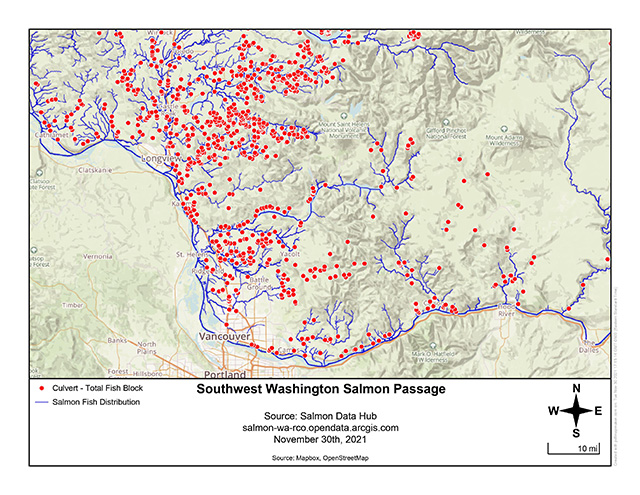

12/1/2021
TL;DR Please consider sponsoring my work.
Last month, I launched my newest desktop web app PDF Map Maker. It is a free website that allows anyone to add GeoJSON data to a basemap, style it, label it, and create a high-quality map to download. This tool was born out of a need I noticed while working with a company client. The agency had staff who needed to make simple project maps, but they were not GIS pros and lacked access or knowledge of GIS software. This knowledge gap exists in offices everywhere and is a barrier to learning the basics of GIS for so many. Often times, planners, environmental scientists, researchers, and project managers just need a nice map for their report. Now they have pdfmapmaker.com to bridge the gap.
This website is part of a larger effort I am undertaking to build a set of web-based, easy-to-use GIS productivity tools that anyone can access on their desktop web browser for free. My first tool, which has been on the web for three years, is the GIS data creation and editing app vector.rocks. Now, you can draw and download GIS data in Vector and then add it to PDF Map Maker for map production. In GIS speak, think of this as the difference between "Data View" (Vector) and "Layout View" (PDF Map Maker).
The goal of building a suite of GIS productivity tools is simple: enable regular office workers to create geographic data and make maps with it. No expensive software. No need for advanced knowledge. I am re-thinking GIS's UI/UX with the hope that most people with basic computer skills can use these tools without being overwhelmed.
Asking for money is awkward. My current set of GIS productivity tools could be behind a paywall as Software as a Service, but I didn't want to do it that way. I want to provide simple yet professional mapping for all. These tools took me countless hours to build and they could be so much more. I have lofty aspirations of building my own web-based GIS, and with your support, I’m hoping those aspirations can become reality. The next GIS productivity tool I want to create is an app to improve search, query and download from the vast amounts public GIS data available on open data portals and ArcGIS Servers. While I would love to dedicate all my spare time to these freelance passion projects, the fact remains we all need to earn a living. If you have used Vector or PDF Map Maker and see value in simple, accessible map-making products, please consider sponsoring my work on GitHub. I realize asking folks to voluntarily part with their money to advance open-source GIS web development is a big ask. With your sponsorship, I will do my best to continue building awesome (and free!) GIS tools for all.